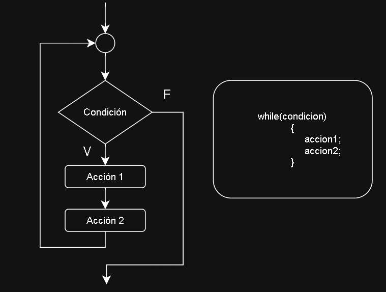
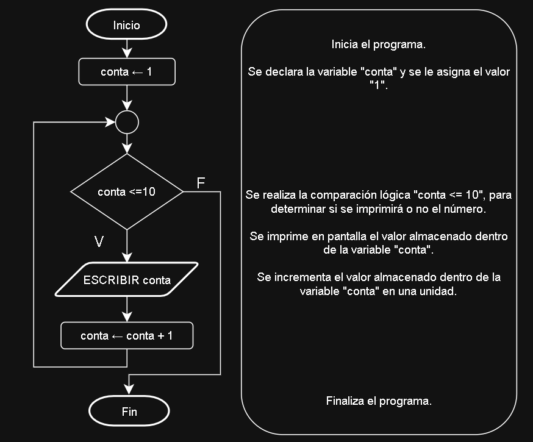
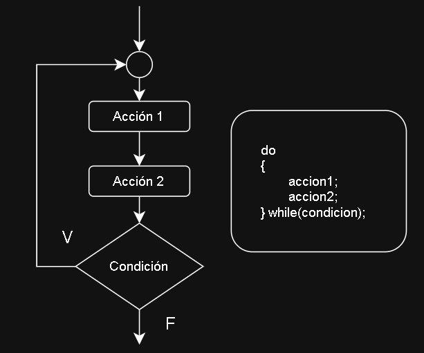
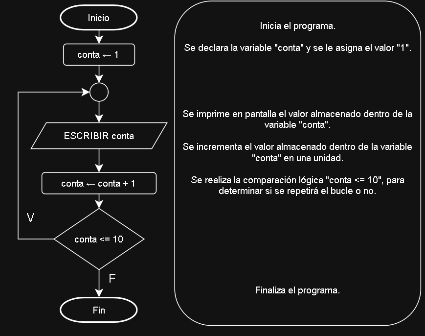
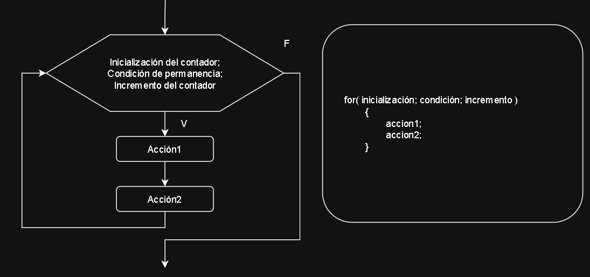
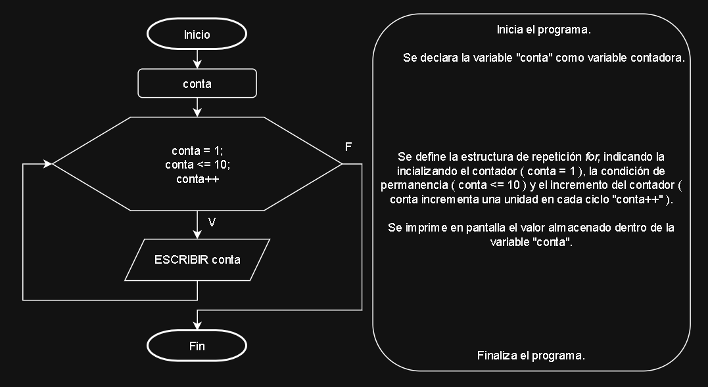

Las estructuras de repetición permiten realizar un conjunto de acciones de manera repetida (o cíclica), siempre que el resultado de evaluar una determinada condición sea verdadero. A este tipo de estructuras también se las conoce como bucles.
Existen tres tipos de estructuras de repetición: while, do-while y for.
while(mientras).
En un bucle while primero se evalúa la condición, y en el caso de que ésta sea verdadera, se realizarán las acciones. Una vez completado el anterior ciclo, se repetirá el mismo procedimiento. Las acciones se realizarán repetidamente mientras el resultado de evaluar la condición sea verdadero.
A continuación, se muestra el diagrama de flujo y su sintaxis en C++ de una estructura de repetición while:

Diagrama de flujo de una estructura de repetición.
Sintaxis en C++ en una estructura de repetición while.
Para comprender como se aplica esta estructura a la hora de resolver problemas, a continuación, se muestra un ejemplo:
Ejemplo: Se desea realizar un algoritmo que imprima en pantalla los primeros diez números, utilizando una estructura de repetición while. Realizar el diagrama de flujo y programar en C++ del algoritmo.
Solución: El algoritmo deberá, en primera instancia, declarar la variable que se va a utilizar (conta), y asignarle el primer número, utilizando una estructura de repetición while. Realizar el diagrama de flujo y programar en C++ del algoritmo.

Diagrama de flujo del algoritmo.
Una vez realizado el diagrama de flujo del algoritmo, se deberá expresar en un lenguaje de programación. El lenguaje pedido por la consigna es el C++:
#include<iostream>
using namespace std;
int main()
{
int conta =1; //Declara la variable entera "conta" asignándole1.
while( conta <= 10) //Se evalúa la condición de la estructura
{
cout<<conta; //Se imprime en pantalla el número.
conta = conta + 1; //Incrementa el valor de conta en uno.
}
return 0;
}
do-while(hacer mientras).
En un bucle do-while primero se realizan las acciones y después se evalúa la condición. En el caso de que ésta sea verdadera, se vuelvan a realizar las acciones. Las acciones se realizarán en forma repetida hasta que la condición sea falsa.
A continuación, se muestra el diagrama y su sintaxis C++ de una estructura de repetición do-while.

Diagrama de flujo de una estructura de repetición.
Sintaxis en C++ en una estructura de repetición do-while.
Para comprender como se aplica esta estructura a la hora de resolver problemas, a continuación, se muestra un ejemplo:
Ejemplo:
Se desea realizar un algoritmo que imprima en pantalla los primeros diez números , utilizando una estructura de repetición do-while. Realizar el diagrama de flujo y programa en C++ del algoritmo.
Solución: El algoritmo deberá, al igual que en el ejemplo anterior. declarar la variable que se va a utilizar (conta), y asignarle el primer número. Luego, se utilizará la estructura de repetición para imprimir el número en pantalla, además de incrementar en una unidad a la variable conta (de esa forma, en el siguiente ciclo se imprimirá el siguiente número). El diagrama de flujo del algoritmo es el siguiente:

Una vez realizado el diagrama de flujo del algoritmo, se deberá expresar en un lenguaje de programación. El lenguaje pedido por la consigna es C++:
#include<iostream>
using namespace std;
int main()
{
int conta = 1; //Declara la variable entera "conta" asignándole 1.
do
{
cout<<conta; //Se imprime en pantalla el número.
conta = conta + 1; //Incrementa el valor de conta en uno.
}while(conta <= 10);
return 0;
}
Programa en C++ del algoritmo.
for(desde y hasta)
En un bucle for las acciones se realizan un númerp exacto de veces. Se deben definir una varaible contadora con su valor de inicio, la condición de permanencia del bucle. y el incremento de la varaible contadora. El for realizará en forma iterativa las acciones hastas que no se cumpla la condición de permanencia, y en cada iteración incrementara el valor de la variable contadora.
A continuación, se muestra el diagrama de flujo y su sintaxis C++ de una estructura de repetición for:

Diagrama de flujo de una estructura de repetición.
Sintaxis en C++ en una estructura de repetición for.
A continuación, se muestran algunas consideraciones para tener en cuenta al utilizar esta estructura:
for sólo tiene una única acción, los tokens { y } son opcionales.
i a la variable contador, ejemplos típicos de inicialización pueden ser i = 0, i = 1, i = -1, etc.
for permanezca iterando dentro del bucle. Cuando esta condición no se cumpla más, el for finalizará. Ejemplo típicos de condiciones de permanencia son i < 10, i <= 100, etc.
i = i + 1, i++, i = i + 2, i = i - 1, i--, i = i - 2, etc.
Para comprender como se aplica esta estructura a la hora de resolver problemas, a continuación, se muestra un ejemplo:
Ejemplo: Se desea realizar un algoritmo que imprima en pantalla los primeros diez números, utilizando una estrucura de repetición for. Realizar el diagrama de flujo y programa en C++ del algoritmo.
Solución: Al igual que en las soluciones anteriores, el algoritmo deberá declarar la variable que se va a utilizar (contar). Luego, se utilizará del contador, la condición de permanencia y el incremento del contador. El diagrama de flujo del algoritmo es el siguiente:

Diagrama de flujo del algoritmo.
Una vez realizado el diagrama de flujo del algoritmo, se deberá expresar en un lenguaje de programación. El lenguaje pedido por la consigna es C++.
#include<iostream>
using namespace std;
int main()
{
for(int conta = 1 ; conta <= 10 ; conta++) //Estructura repetitiva for.
{
cout<<conta;
}
return 0;
}
Programa en C++ del algoritmo.
while. Muestre cada número por pantalla. También el realice el diagrama de flujo y el programa en C++.
do-while.
for que imprima en pantalla todos los números comprendidos entre valores n y m. Los valores de n y m se deben ingresar por teclado. Hacer diagrama de flujo y codificación en C++.
C++.
Diseñar un algoritmo que simule un proceso básico de login, utilizando una contraseña numérica de cuatro dígitos. El programa deberá realizar primero una validación de la contraseña y, una vez validada correctamente, solicitar su reingreso para permitir el acceso a un mensaje secreto.
Para la realización del algoritmo se deberá tener en cuenta los siguientes puntos:
Ingrese la contraseña para validación.
Contraseña inválida. Intente nuevamente y volver a solicitar el ingreso de la contraseña hasta que sea correcta.
Contraseña validada. Ingrese nuevamente para iniciar sesión.
Acceso concedido. Mensaje secreto: ….
e) Si la segunda contraseña no coincide, el programa deberá mostrar el mensaje Error en el login. La contraseña no coincide y volver a solicitar únicamente el reingreso de la contraseña.
Realizar el diagrama de flujo correspondiente y la codificación en lenguaje C++.